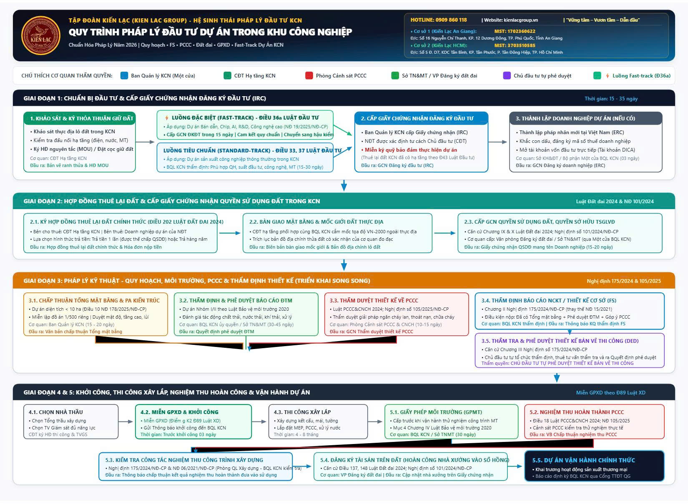

🖼️ Sơ Đồ Luồng Quy Trình Pháp Lý Đầu Tư Dự Án Trong KCN (Workflow 2026)
Sơ đồ tổng thể được trực quan hóa thành dạng hình ảnh độ phân giải cao và đồ họa vector SVG có tích hợp logo và nhận diện thương hiệu của Tập đoàn Kiến Lạc (KIEN LAC GROUP) với hệ sinh thái 2 cơ sở tại An Giang (MST: 1702360622) và TP. Hồ Chí Minh (MST: 3703510585), hiển thị hoàn hảo trên mọi thiết bị và trình chiếu hội thảo.


1. Khảo sát & Ký MOU giữ đất (với CĐT hạ tầng) ➜ 2. Lựa chọn luồng IRC: Luồng Fast-track (Đ36a - 15 ngày) hoặc Luồng Tiêu chuẩn (Đ33, 37 - 20-30 ngày) ➜ 3. Ký HĐ Thuê đất chính thức & Cấp Sổ hồng KCN (Đ202 Luật Đất đai 2024) ➜ 4. Triển khai Song song: Tổng mặt bằng (Đ10 NĐ 178) + ĐTM + Thẩm duyệt PCCC (NĐ 105) ➜ 5. Thẩm định Báo cáo NCKT (FS) tại BQL KCN (NĐ 175/2024) & CĐT duyệt Bản vẽ thi công ➜ 6. Miễn GPXD (Đ89 Luật XD) & Gửi Thông báo khởi công ➜ 7. Nghiệm thu PCCC & Kiểm tra nghiệm thu công trình XD ➜ 8. Hoàn công tài sản nhà xưởng & Vận hành chính thức.
⚖️ Bảng Rà Soát & Đối Chiếu Hiệu Lực Căn Cứ Pháp Lý (Từ file 20260100)
Cập nhật dữ liệu hệ thống 2026
Bảng phân tích, thẩm tra và chuẩn hóa từng điều khoản được trích dẫn trong bản vẽ sơ đồ cũ
20260100.quy trinh phap ly dau tu DA trong KCN.pdf. Làm rõ các điều khoản bị dẫn sai,
bổ sung các quy định mới nhất và chỉ ra các lưu ý thực chiến.
| STT | Căn cứ trong file cũ (20260100) | Trạng thái hiệu lực | Căn cứ pháp lý Thay thế / Bổ sung chuẩn | Đánh giá chuyên sâu & Hướng dẫn áp dụng |
|---|---|---|---|---|
| 01 | Điều 19 Luật Đầu tư 2020 NĐT lập & trình đề xuất dự án đầu tư |
Sai số điều luật |
Điều 33 Luật Đầu tư 2020 (hoặc Luật Đầu tư 143/2025/QH15); kết hợp Điều 37, 38 |
Bản cũ viện dẫn nhầm: Điều 19 là quy định về "Chính sách ưu đãi và hỗ trợ đầu tư đặc biệt". Quy định về Hồ sơ đề xuất dự án đầu tư chuẩn nằm tại Điều 33. NĐT thứ cấp trong KCN đã có hạ tầng thường nộp hồ sơ cấp GCN ĐKĐT theo Điều 37, 38 (không thuộc diện xin chấp thuận chủ trương đầu tư). |
| 02 | Điều 37 - 40 Luật Đầu tư 2020; NĐ 31/2021/NĐ-CP Cấp GCN Đăng ký đầu tư (IRC) |
Đã sửa đổi, bổ sung | Luật số 57/2024/QH15; Điều 36a Luật Đầu tư; Nghị định 19/2025/NĐ-CP | Bổ sung đột phá mới: Quốc hội đã bổ sung Điều 36a Luật Đầu tư quy định về "Thủ tục đầu tư đặc biệt" áp dụng tại Khu công nghiệp, Khu kinh tế hướng dẫn bởi Nghị định 19/2025/NĐ-CP. Dự án công nghệ cao, R&D, bán dẫn được cấp IRC trong vòng 15 ngày và chuyển từ tiền kiểm sang hậu kiểm. |
| 03 | Điều 43 Luật Đầu tư 2020; Điều 25 NĐ 31/2021/NĐ-CP Bảo đảm thực hiện dự án (Ký quỹ) |
Bản cũ ghi sai bản chất | Khoản 1 Điều 43 Luật Đầu tư 2020; Điều 25 NĐ 31/2021/NĐ-CP | File cũ ghi chú "NĐT trong nước không bắt buộc" là hoàn toàn sai luật. Luật Đầu tư không phân biệt NĐT trong nước hay nước ngoài. Việc miễn ký quỹ áp dụng khi: NĐT thuê lại đất đã hoàn thiện kết cấu hạ tầng kỹ thuật từ CĐT hạ tầng KCN (Điểm e Khoản 1 Điều 43). Do đó NĐT thứ cấp trong KCN thông thường được miễn ký quỹ với Nhà nước. |
| 04 | Điều 10, Điều 9 NĐ 178/2025/NĐ-CP Quy hoạch xây dựng (Tổng mặt bằng & KTCT) |
Đang có hiệu lực | Luật Quy hoạch đô thị và nông thôn 2024 (số 47/2024/QH15); NĐ 178/2025/NĐ-CP | Bản cũ đón đầu đúng Nghị định 178/2025/NĐ-CP (có hiệu lực từ 01/07/2025 cùng Luật Quy hoạch đô thị và nông thôn 2024). Dự án công trình công nghiệp trong KCN có diện tích dưới 10 ha chỉ cần lập Tổng mặt bằng và phương án kiến trúc trình BQL KCN phê duyệt, không phải lập đồ án 1/500 riêng biệt. |
| 05 | Chương 10 Luật Đất đai 2024 Giấy chứng nhận QSDĐ |
Đang có hiệu lực | Điều 202 Luật Đất đai 2024; Nghị định 101/2024/NĐ-CP; NĐ 102/2024/NĐ-CP | Luật Đất đai 2024 (Luật số 31/2024/QH15) có hiệu lực từ 01/08/2024. Cần chuẩn hóa tên gọi mẫu giấy chứng nhận mới theo luật là: "Giấy chứng nhận quyền sử dụng đất, quyền sở hữu tài sản gắn liền với đất". Hướng dẫn chi tiết cấp đổi và hoàn công tài sản thực hiện theo Nghị định 101/2024/NĐ-CP. |
| 06 | Chương 2, Chương 3 NĐ 175/2024/NĐ-CP Thẩm định FS, Thẩm định Thiết kế kỹ thuật |
Đang có hiệu lực |
Nghị định số 175/2024/NĐ-CP (Thay thế hoàn toàn Nghị định số 15/2021/NĐ-CP) |
Bản cũ cập nhật chuẩn xác Nghị định 175/2024/NĐ-CP (ban hành ngày 30/12/2024). Điểm mấu chốt: Thẩm quyền thẩm định Báo cáo NCKT (thiết kế cơ sở) được phân cấp triệt để cho Ban Quản lý KCN. Chủ đầu tư tự tổ chức thẩm định, phê duyệt thiết kế bản vẽ thi công (DED). |
| 07 | "Luật Xây dựng 2025" Ghi tại Khoản 2 Điều 43 & Mục 3 Chương 4 |
Chưa chuẩn hóa danh xưng | Luật Xây dựng 2014 (sửa đổi 2020 bởi Luật 62/2020, Luật 57/2024) & Dự thảo Luật XD sửa đổi | Tên gọi chính thức trong hệ thống văn bản quy phạm pháp luật hiện hành vẫn là Luật Xây dựng 2014 và các Luật sửa đổi, bổ sung liên quan. Cần chuẩn hóa trích dẫn để đảm bảo tính pháp lý khi nộp hồ sơ cơ quan hành chính nhà nước. |
| 08 | Nghị định 105/2025/NĐ-CP; Luật PCCC&CNCH 2024 Thẩm duyệt PCCC & Nghiệm thu PCCC |
Đang có hiệu lực |
Luật số 55/2024/QH15; Nghị định số 105/2025/NĐ-CP (Thay thế NĐ 136/2020 và NĐ 50/2024) |
Căn cứ chuẩn xác. Luật Phòng cháy, chữa cháy và Cứu nạn, cứu hộ 2024 có hiệu lực từ 01/07/2025. Nghị định 105/2025/NĐ-CP điều chỉnh quy trình thẩm duyệt và nghiệm thu PCCC, đồng thời tạo cơ chế thẩm duyệt tích hợp song song với thẩm định xây dựng. |
| 09 | Luật Bảo vệ môi trường 2020 ĐTM, Giấy phép môi trường (GPMT) |
Đang có hiệu lực | Luật BVMT 2020 (Luật số 72/2020/QH14); Nghị định 08/2022/NĐ-CP | Điều khoản viện dẫn chuẩn. Cần bổ sung quy chế thực tiễn: UBND cấp tỉnh đã ủy quyền cho Ban Quản lý KCN thẩm định ĐTM và cấp Giấy phép Môi trường (GPMT) đối với các dự án thuộc thẩm quyền cấp tỉnh, giúp NĐT thực hiện trọn gói tại BQL KCN. |
| 10 | Thủ tục Miễn Giấy phép xây dựng Không có trong sơ đồ cũ |
Cần bổ sung làm rõ | Điểm g Khoản 2 Điều 89 Luật Xây dựng (sửa đổi 2020) | Lợi thế đặc quyền KCN: Công trình trong KCN có Tổng mặt bằng / 1/500 được duyệt và đã qua thẩm định thiết kế cơ sở tại BQL KCN thì ĐƯỢC MIỄN GIẤY PHÉP XÂY DỰNG. Chủ đầu tư chỉ cần nộp Thông báo khởi công trước 03 ngày. Sơ đồ cũ chưa làm nổi bật ưu đãi này. |
📋 Sổ Tay Chi Tiết Từng Bước Thủ Tục (Standard Operating Procedure - SOP)
5 Giai Đoạn Chuẩn HóaQuy định đột phá tại Điều 36a Luật Đầu tư (được bổ sung bởi Luật số 57/2024/QH15) và hướng dẫn chi tiết tại Nghị định số 19/2025/NĐ-CP ngày 10/02/2025 của Chính phủ. Cơ chế này áp dụng cho dự án tại KCN/KKT thuộc các ngành công nghệ cao, bán dẫn, vi mạch, trí tuệ nhân tạo (AI), trung tâm R&D và đổi mới sáng tạo.
| Nội dung so sánh | Quy trình Tiêu chuẩn (Standard Track) | Quy trình Đầu tư Đặc biệt (Fast-Track) |
|---|---|---|
| Căn cứ pháp lý | Luật Đầu tư 2020 / 2025; Nghị định 31/2021/NĐ-CP | Điều 36a Luật Đầu tư; Nghị định số 19/2025/NĐ-CP |
| Thời gian cấp GCN ĐKĐT | 15 - 35 ngày làm việc | Tối đa 15 ngày làm việc tại Ban Quản lý KCN |
| Thủ tục ĐTM / Môi trường | Phải lập, thẩm định và được phê duyệt ĐTM trước khi thẩm định thiết kế xây dựng (mất 2 - 3 tháng) | Chuyển sang cơ chế HẬU KIỂM: NĐT nộp văn bản cam kết tuân thủ quy chuẩn kỹ thuật môi trường, không phải chờ phê duyệt ĐTM tiền kiểm |
| Thẩm duyệt PCCC | Phải có Giấy chứng nhận thẩm duyệt thiết kế PCCC trước khi phê duyệt thiết kế xây dựng | Cam kết tuân thủ tiêu chuẩn an toàn PCCC; cơ quan quản lý hậu kiểm trong quá trình thi công và kiểm tra trước khi vận hành |
| Giấy phép & Thẩm định Xây dựng | BQL KCN thẩm định thiết kế cơ sở (20 - 30 ngày) | Miễn thẩm định thiết kế cơ sở tiền kiểm; Chủ đầu tư tự tổ chức thẩm tra, phê duyệt thiết kế và chịu trách nhiệm pháp lý |
| Tổng thời gian chuẩn bị pháp lý | Từ 6 đến 9 tháng | Rút ngắn chỉ còn từ 1 đến 2 tháng |
⏱️ Ma Trận Triển Khai Song Song & Chiến Lược Hóa Giải Điểm Nghẽn
Tối Ưu Hóa Tiến Độ Đến 50%1. Nguyên tắc triển khai song song (Parallel Processing):
Điểm cốt tử để rút ngắn thời gian chuẩn bị dự án công nghiệp từ 12 tháng xuống 4 - 6 tháng là không làm việc tuần tự (serial) mà phải chỉ định Tổng thầu Tư vấn thiết kế triển khai đồng thời 3 bộ phận:
- Tuần 5 - Tuần 12: Ngay sau khi ký Hợp đồng thuê đất và có sơ đồ vị trí, tiến hành đồng thời: (1) Lập hồ sơ chấp thuận Tổng mặt bằng; (2) Lập Báo cáo ĐTM; (3) Lập Thiết kế cơ sở & Thẩm duyệt PCCC.
- Tuần 13 - Tuần 16: Khi vừa có chấp thuận Tổng mặt bằng và hồ sơ ĐTM/PCCC đã trình hội đồng, tiến hành ngay việc nộp thẩm định Báo cáo NCKT (FS) tại Ban Quản lý KCN.
- Tuần 17 - Tuần 18: Trong lúc BQL KCN hoàn thiện Thông báo thẩm định FS, CĐT tổ chức đấu thầu lựa chọn nhà thầu thi công xây lắp và chuẩn bị sẵn hồ sơ Thông báo khởi công.
2. Cảnh báo các điểm nghẽn (Bottlenecks) và Giải pháp độc quyền:
❌ Vướng mắc Quy chuẩn PCCC QCVN 06
Việc lựa chọn sơn chống cháy hoặc giải pháp bọc kết cấu thép nhà xưởng không đáp ứng quy chuẩn kiểm định mẫu đốt thực tế khiến nhiều dự án bị đình chỉ nghiệm thu PCCC nhiều tháng.
❌ Rủi ro Tiền thuê đất: Một lần vs Hàng năm
Theo Luật Đất đai 2024, thuê đất trả tiền hàng năm không được thế chấp QSDĐ tại ngân hàng thương mại, gây bế tắc trong việc vay vốn lưu động hoặc tài trợ dự án.
❌ Hiểu sai về Giấy phép xây dựng
Rất nhiều đơn vị tư vấn vẫn xếp thủ tục xin cấp GPXD làm mất thêm 30 ngày công vô ích sau khi đã có thẩm định thiết kế xây dựng.